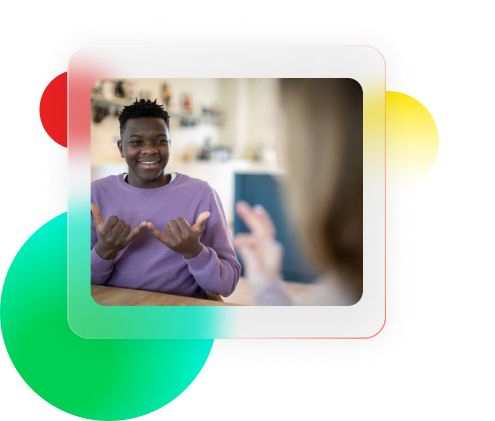

Langue des signes arabe
La langue des signes arabe (LSA) est la principale méthode de communication entre les personnes malentendantes ou sourdes et les membres de leur communauté qui interagissent avec elles au sein des communautés arabes. Il existe certainement d'autres formes de communication, cependant, ces méthodes peuvent ne pas prendre en charge l'interaction naturelle, où le destinataire du message de communication n'a pas à apprendre la langue des signes ou toute autre méthode de communication.